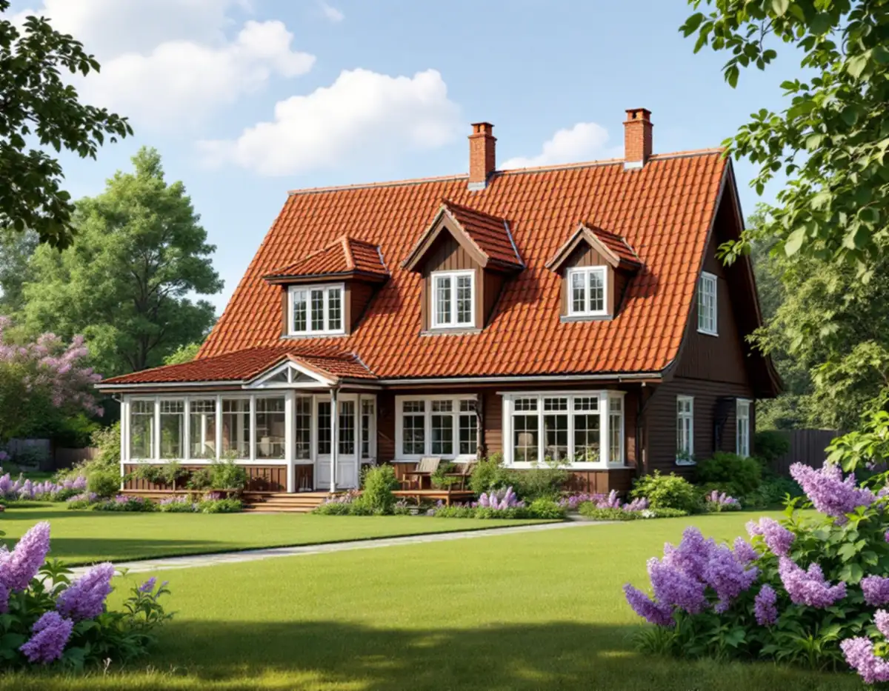
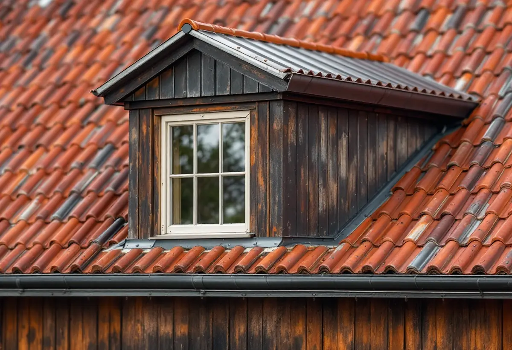

Vinden först
Vi undersöker underlag, läkt och anslutningar inifrån innan vi bedömer taket utifrån.
En takrenovering i Älvsjö gäller oftast ett brant sadeltak på en villa från 1910- eller 1920-talet, där teglet läggs om på nytt underlag och detaljer från senare om- och tillbyggnader tas om hand. I villastäderna Långbro, Herrängen och Örby är husen mer blandade, och där börjar vi med att reda ut vad som ligger på taket i dag.

Örby och Långbro exploaterades redan omkring år 1900, före Älvsjö. Själva Älvsjö villastad kom till när fastighetsbolaget AB Hem på landet köpte två områden från Älvsjö gård 1908 och 1911. Tomtförsäljningen började i december 1908, och omkring 1915 var ungefär hundra tomter bebyggda – hälften av alla i området.
Köparna var till stor del hantverkare och tjänstemän: snickare, målare, skräddarmästare och byggmästare. Villorna hade i regel två, tre eller fyra rum och kök, och ibland rymde de flera lägenheter där den minsta hyrdes ut. Under 1920-talet fortsatte tomterna att säljas i nästan samma takt.
I Herrängen och Långsjö fanns en viss villabebyggelse före 1910, men det var därefter som villor, småstugor och sommarhus byggdes i större skala. Delar av Långbro och Herrängen räknas i dag också till stadens småstugeområden.

Stadsmuseets inventering av Älvsjö villastad beskriver två vanliga hustyper. Den ena har vit slätputsad bottenvåning, gavelspetsar med mörkbrun panel och brant sadeltak täckt med rött tegel. Den andra har falurödfärgad träpanel, vita snickerier och ett brant tegeltäckt sadeltak med kupa.
Samma inventering konstaterar att många av villorna från 1910- och 20-talen har byggts om eller till, ibland i flera omgångar, och att nya fasad- och takmaterial har förändrat husens karaktär. Bara ett tiotal av de äldre husen hade vid inventeringen behållit sitt ursprungliga utseende nästan helt.
För en takrenovering innebär det att taket ofta är en blandning: tegel på huvudtaket, en senare kupa med annat material, en tillbyggnad med låg lutning. Varje del har sin egen livslängd och sina egna svaga punkter, och anslutningarna mellan dem är ofta där läckorna börjar.
Villastaden gränsar i söder mot Älvsjöskogen, och i Herrängen och Långsjö ligger flera hus med strandtomt mot Långsjön. Träd nära husen ger skugga, löv i rännorna och fuktiga takfall där mossa trivs.
Kring Långsjön byggdes också sommarhus. Används ett sådant hus i dag året runt kan takkonstruktionen vara enklare än på en villa, och vinden var inte tänkt att ligga ovanpå uppvärmda rum. Vi tittar därför extra noga på isolering och ventilation när ett sådant tak läggs om.
Sedan 1 december 2025 krävs normalt inget bygglov för att byta taktäckningsmaterial eller kulör på ett en- eller tvåbostadshus, enligt Boverket. Lov kan ändå krävas om det finns skyddsbestämmelser i detaljplan eller områdesbestämmelser, om huset är särskilt värdefullt enligt PBL 8 kap. 13 § eller om planen har utökad lovplikt. Ny takform eller höjd kräver lov som tidigare.
Stadens vägledning för småhusområden räknar Herrängen, Långsjö, Långbro och Örby som villastäder där området som helhet inte bedöms som en sådan kulturhistoriskt värdefull miljö som avses i PBL 8 kap. 13 §. Enskilda hus kan ändå vara klassade. Stockholms stad hänvisar till Stadsmuseets klassificeringskarta som första kontroll: gult eller grått och inget annat skydd betyder i regel inget lov.
I Älvsjö villastad bestämde AB Hem på landet redan i köpekontrakten att husens yttre färgton skulle godkännas, för att undvika färger som inte harmonierade med grannarnas. Det är inte ett bygglovskrav i dag, men det förklarar varför området hänger ihop – och varför vi rekommenderar att behålla rött tegel. Läs mer om bygglov vid takbyte.
Vi börjar på vinden. Där syns det om underlagspappen har släppt, om läkten är rötskadad och om tidigare tillbyggnader har anslutits ordentligt mot det gamla taket. Råspont som är fuktskadad byts innan nytt underlag läggs.
Är originalteglet kvar lägger vi tillbaka hela pannor och kompletterar med likvärdiga. Har huvudtaket redan fått ett annat material bedömer vi om det ska läggas om eller bytas. Kupor, verandatak och plåtdetaljer kring skorsten, ränndalar och takfot görs om i samma arbete, så att alla delar får samma livslängd.
Mer om tillvägagångssättet finns under takrenovering, och om hur vi arbetar i området på takläggare i Älvsjö. Är du osäker på om renovering räcker kan du läsa takbyte eller takrenovering.
Vi undersöker underlag, läkt och anslutningar inifrån innan vi bedömer taket utifrån.
Kupor, tillbyggnader och verandatak noteras var för sig, eftersom de ofta har annat material och annan ålder.
Vi tittar i Stadsmuseets karta och detaljplanen för just din tomt i Älvsjö, Långbro eller Herrängen.
Pannorna tas ner, och papp, läkt och skadad råspont byts.
Huvudtak och tillbyggnader får nya anslutningar och beslag så att allt hänger ihop.
Rännor och stuprör rensas eller byts, och vi går igenom taket med dig.
Du får rotavdrag med 30 procent av arbetskostnaden, upp till 50 000 kronor per person och år. Rot och rut får tillsammans bli högst 75 000 kronor, och material och resor ger inget avdrag. Avdraget gör vi direkt på fakturan.
Har ett gammalt sommarhus vid Långsjön blivit permanentbostad gäller avdraget som för vilken villa som helst. Skatteverket godtar även arbete på ett fritidshus du äger och använder. Äger ni huset tillsammans har var och en eget utrymme – se rotavdrag för takarbete.
I Älvsjö påverkas kostnaden mycket av hur många olika takdelar huset har fått genom åren, hur mycket originaltegel som går att återanvända och om underlaget behöver bytas på hela ytan eller bara delvis. Strandtomter och branta tomter kan också påverka hur ställningen kan stå. Läs mer om vad en takrenovering kostar eller räkna på ditt tak i kalkylatorn för takbyte.
Takbyte, besiktning och plåtarbeten.
Takläggare i Älvsjö →Så fungerar en omläggning.
Takrenovering och takomläggning →Det här styr priset.
Vad kostar en takrenovering? →Räkna på takytan och ROT.
Takbyte-kalkylator →Trädgårdsstad med lertegel.
Takrenovering i Enskede →Stuvsta, Snättringe och Skogås.
Takrenovering i Huddinge →Trädgårdsstäder, tegel och funkistak.
Takrenovering i Bromma →